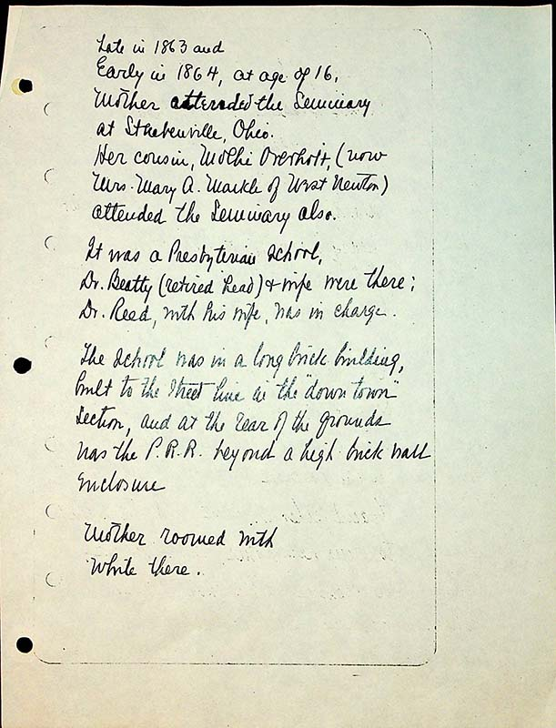
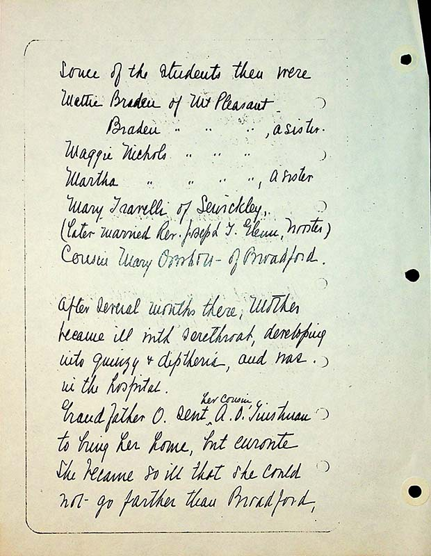
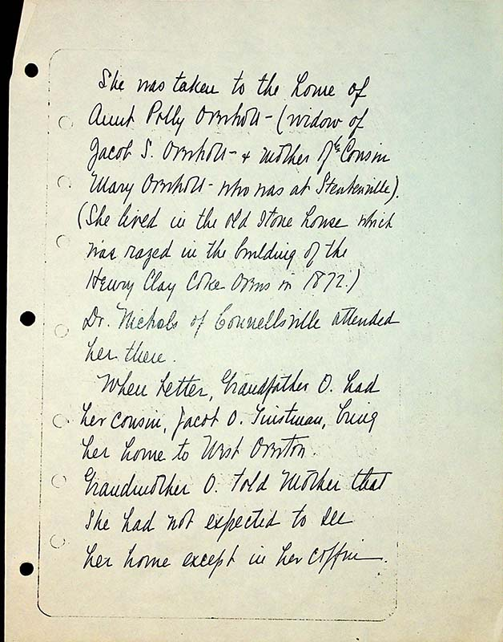
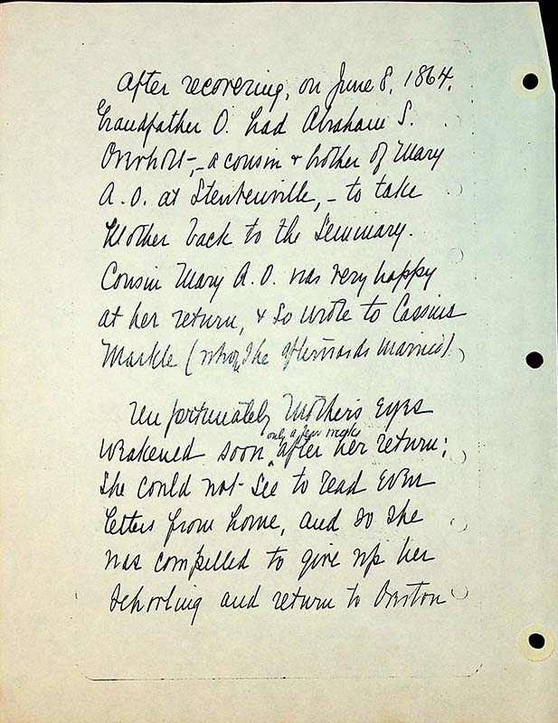
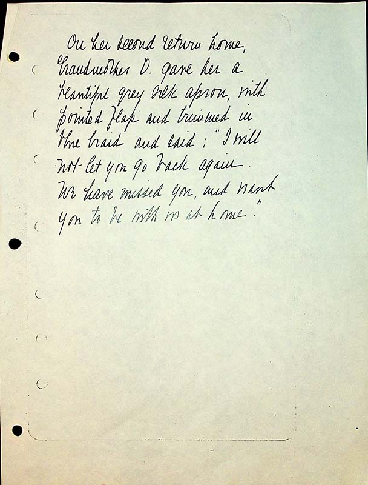

Late in 1863 and early in 1864, at age of 16, Mother attended the Seminary at Steubenville, Ohio.
Her cousin, Mollie Overholt (now Mrs. Mary a. Markle of West Newton) attended the Seminary also.
It was a Presbyterian school, Dr. Beatty (retired head) and wife were there; Dr Reed, with his wife, was in charge.
The school was in a long brick building, built to the street line in the “downtown’ section, and at the rear of the grounds was the P.R.R beyond a high brick wall enclosure.
Mother roomed with while there.
Some of the students there were:
Mattie Braden of Mt Pleasant
Braden, “ “ “ , a sister
Maggie Nichols, “ “ “
Martha “ “ “ , a sister
Mary Travelli of Sewickley, (later married Rev. Joseph T Glenn, Wooster)
Cousin Mary Overholt- of Broadford
She was taken to the home of Aunt Polly Overholt (widow of Jacob S. Overholt & mother of her cousin Mary Overholt who was at Steubenville). (She lived in the old stone house which was razed in the building of the Henry Clay coke ovens in 1872).
Dr. Nichols of Connellsville attended her there.
When better, Grandfather O had her cousin, Jacob O. Tinstman, bring her home to West Overton
Grandmother O told Mother that she had not expected to see her home except in her coffin.
After recovering, on June 8 1864, Grandfather O had Abramham S. Overholt- a cousin & brother of Mary A. O at Steubenville, to take Mother back to the seminary.
Cousin Mary A. O. was very happy at her return, & so wrote to Cassius Markle (whom she afterwards married).
Unfortunately mother’s eyes weakened soon^ only a few weeks after her return, she could not see to read even letters from home, and so she was compelled to give up her schooling and return to Overton.
On her second return home, Grandfather O gave her a beautiful grey silk apron, with pointed flap and trimmed in blue braid and said: “I will not let you go back again. We have missed you, and want you to be with us at home.”